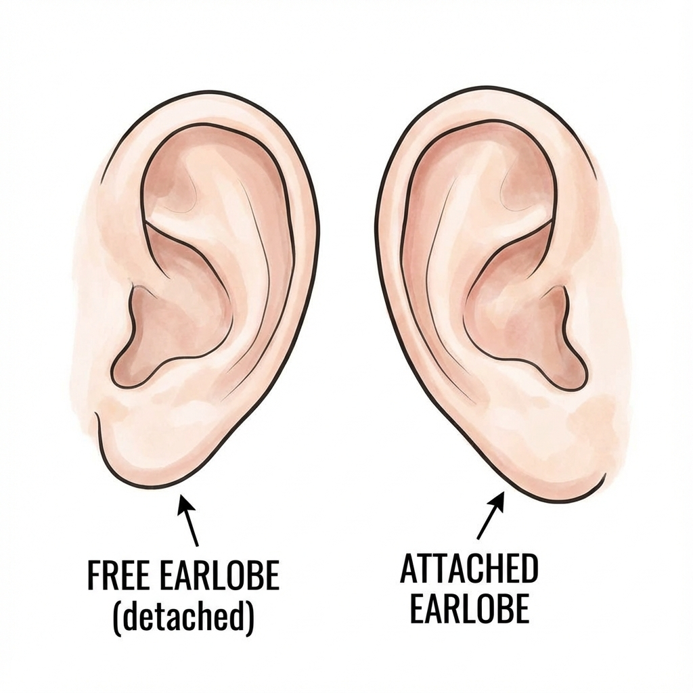
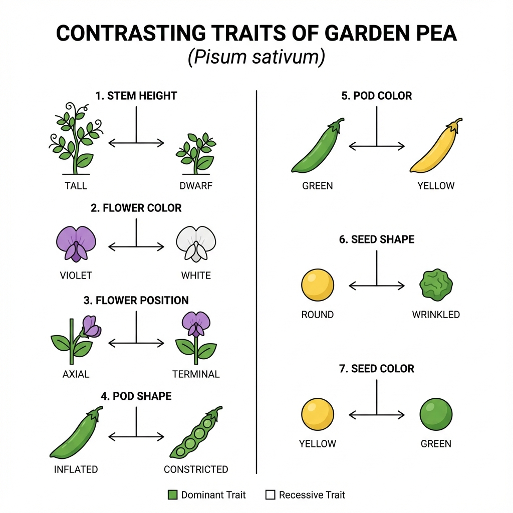
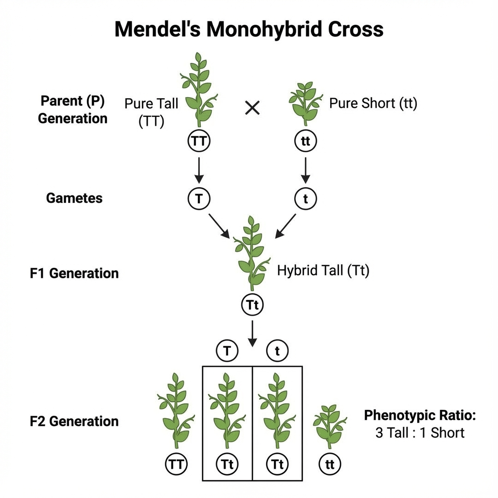
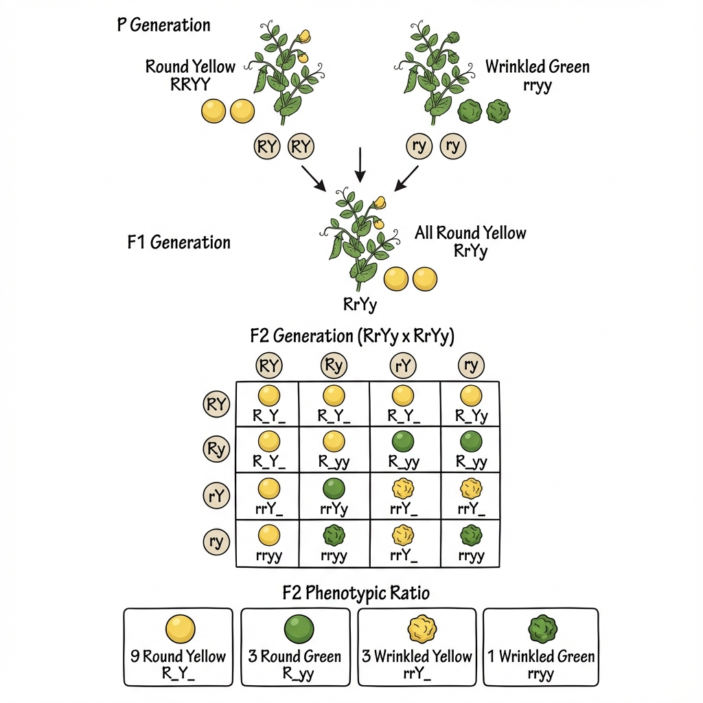
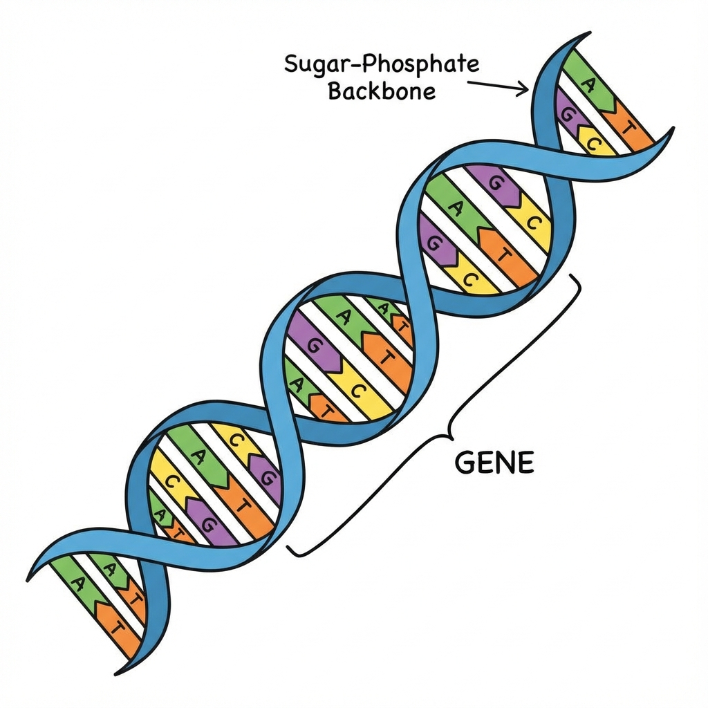

Differences in traits between parents
and offspring.
8.1 Variation
Accumulation of Variation
Variations arise during reproduction and can accumulate over generations.
Accumulation of Variation
Asexually: Variations are fewer. Occurs due to small inaccuracies in DNA
copying (Mutation).
Sexually: Variations are large. Occurs due to crossing over, separation of
chromosomes, and mutation.
Importance of Variation
Depending upon the nature of variations, different individuals would have different kinds of
advantage.
Example: Thermostatic Bacteria that can withstand heat will survive better
in a heat wave.
Main advantage is that it increases the chances of survival in a changing environment.
Types of Variations
Somatic
Takes place in body cells.
Neither inherited nor transmitted.
Known as acquired traits.
Example: Cutting of tails in dogs.
Germinal
Takes place in gametes/reproductive cells.
Inherited as well as transmitted.
Known as inherited traits.
Example: Human height, skin colour.
8.2 Heredity
Inherited Traits
Transmission of characteristics from parents to offspring.
Inherited Traits
Traits are characteristics transmitted from parents to offspring. Offspring resemble parents but are
not identical.
Example: Earlobes
Free Earlobe: The bottom of the earlobe hangs free. (Dominant trait).
Attached Earlobe: The bottom of the earlobe is attached to the head
side. (Recessive trait).

Mendel and His Work on Inheritance
Gregor Johann Mendel (1822 & 1884): Should be called the Father of
Genetics as he was the first to explain how traits are passed down using Garden Peas.
Why Garden Pea (Pisum sativum)?
Availability of detectable contrasting traits.
Short life span.
Self-fertilisation and easy cross-fertilisation.
Large number of seeds.
7 Contrasting Characters Selected

8.2.2 Rules of Inheritance
Mendel’s Contributions
Gregor Johann Mendel used pea plants (Pisum sativum) to understand inheritance.
Monohybrid Cross
Cross between two pea plants with one pair of contrasting characters is called a monohybrid cross.
Example: Cross between a tall and a dwarf plant.

Pure or Homozygous
TT or tt
Both alleles are same (Both dominant or both recessive).
Heterozygous (Hybrid)
Tt
One dominant, one recessive allele.
Ratio Type
Value
Meaning
Phenotypic Ratio
3 : 1
3 Tall : 1 Dwarf (Physical appearance)
Genotypic Ratio
1 : 2 : 1
1 TT : 2 Tt : 1 tt (Genetic make up)
2. Independent Inheritance (Dihybrid Cross)
Crossing plants with two different traits: Seed Shape (Round/Wrinkled) and
Seed Colour (Yellow/Green).
Parents: Round-Yellow (RRYY) x Wrinkled-Green (rryy)
F1 Generation: All Round-Yellow (RrYy). (Round and Yellow are dominant).
F2 Generation: Self-pollination of F1 plants results in new combinations.
F2 Phenotypic Ratio
9 : 3 : 3 : 1
9 Round-Yellow (Parental type)
3 Round-Green (New Combination)
3 Wrinkled-Yellow (New Combination)
1 Wrinkled-Green (Parental type)
This shows that traits are inherited independently of each other (Law of Independent
Assortment).

8.2.4 Mechanism
How Do Traits Get Expressed?
Genes control traits by making proteins.
The Central Dogma
DNA → Protein → Trait
Gene: A segment of DNA that provides instructions for a specific protein.
Enzymes: Proteins that control chemical reactions (e.g., production of
plant hormones for growth).

Mechanism Example (Tallness)
Efficient Enzyme: Lots of growth hormone made → Plant grows Tall.
Inefficient Enzyme (Mutation): Little growth hormone made → Plant
remains Short.
Why two copies?
Sexually reproducing organisms have two sets of genes (one from each parent).
• Gametes (Germ cells) have only one set (Haploid).
• Zygote restores the two sets (Diploid).
8.2.5 Sex Determination
Sex Determination
What determines if the offspring is male or female?
Environmental vs Genetic
Environmental: In some reptiles, incubation temperature of eggs determines
sex (e.g., Turtles, Lizards). Some snails can change sex.
Genetic: In humans, sex is determined by specific chromosomes.
Human Sex Determination
Humans have 23 pairs of chromosomes. One pair is Sex Chromosomes.
Females: XX (Perfect pair)
Males: XY (One normal X, one short Y)
Process
Mother (XX): Always produces eggs with X chromosome.
Father (XY): Produces sperms with either X (50%) or
Y (50%).
Determination:
The sex of the child is determined by the father's sperm.
• Egg (X) + Sperm (X) → XX (Girl) • Egg (X) + Sperm (Y) → XY (Boy)